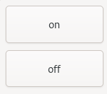
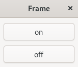

(update:2025/2/1)
Windowの枠（フレーム）を無くします。
#include <gtkmm/application.h>
#include <gtkmm/box.h>
#include <gtkmm/button.h>
#include <gtkmm/window.h>
#include <iostream>
class MyWindow : public Gtk::Window
{
public:
MyWindow();
virtual ~MyWindow() = default;
protected:
// Signal handlers:
void on_button1_clicked();
void on_button2_clicked();
// Child widgets:
Gtk::Box m_box;
Gtk::Button m_button1, m_button2;
};
MyWindow::MyWindow()
: m_box( Gtk::Orientation::VERTICAL, 10 ),
m_button1( "on" ),
m_button2( "off" )
{
// This just sets the title of our new window.
set_title( "Frame" );
// Sets the margin around the box.
m_box.set_margin( 10 );
// put the box into the main window.
set_child( m_box );
m_button1.signal_clicked().connect(
sigc::mem_fun(*this, &MyWindow::on_button1_clicked));
m_box.append( m_button1 );
m_button1.set_expand();
m_button2.signal_clicked().connect(
sigc::mem_fun(*this, &MyWindow::on_button2_clicked));
m_box.append( m_button2 );
m_button2.set_expand();
}
void MyWindow::on_button1_clicked()
{
set_decorated( true ); // frame 有り
std::cout << "ON" << std::endl;
}
void MyWindow::on_button2_clicked()
{
set_decorated( false ); // frame 無し
std::cout << "OFF" << std::endl;
}
int main(int argc, char* argv[])
{
auto app = Gtk::Application::create( "gtkmm4.example" );
return app->make_window_and_run<MyWindow>(argc, argv);
}
| Frame 無し | Frame 有り |
|  |  |